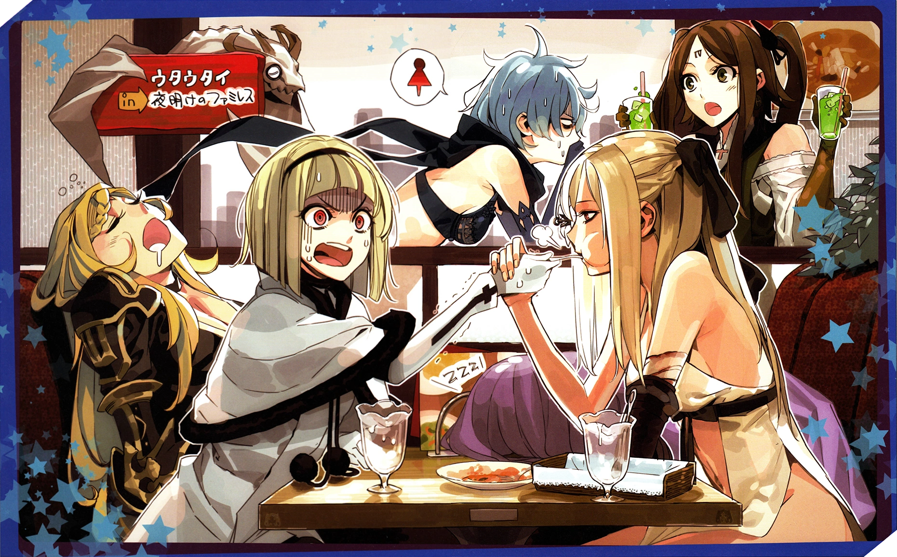

ZERO || Home: Unknown || Daemons: None | Partner: Michael/Mikhail || Voice: Maaya Uchida [JP] /
Tara
Platt [ENG]
Zero is the oldest of the Intoner sisters, and is arguably the most vulgar and brutish of the lot. With
her prosthetic arm and the white flower in her eye constantly growing larger, she has the most unique
appeareance of the
sisters; and along with her dragon parther Mikhail, is on a killing spree, actively hunting down her
five sisters. Zero is the protagonist, and main playable character of Drakengard 3, with her hunt for
her sisters being the primary focal point of the story. She serves as the protagonist for all of the
games branches, although other characters are playable at certain points of the story, and in DLC
stories.
ONE || Home: Cathedral City || Daemons: Gabriel/Gabriella, Abdiel || Partners:
Gabriel/Gabriella, Brother One || Voice: Rie Tanaka [JP] / Lauren Landa [ENG]
One is the second of the Intoner sisters, and can be considered the main antagonist of Drakengard 3,
serving as the final boss to two of the game's branches, as well as the main protagonist of the spin-off
manga Utahime Five. She also is the only sister to have no disciples but two partners, her faux-brother,
also named One, and her dragon Gabriel/Gabriella. One is primarily an intellectual, serious and
unwavering in her innate sense of justice, making her the complete opposite of Zero in many ways. One
became the head of the Cathedral City Church after Zero's escape at the start of the game. One's sharp
senses grow stronger everyday, a fact that she has had to learn to cope with.
TWO || Home: Land of Sands || Daemons: Egregori, Raphael || Disciple: Cent || Voice: Chiwa Saito
[JP] / Kate Higgins [ENG]
Two is the third of the Intoner sisters, and is considered to be the most "normal" of the lot. She is
the liveliest of the sisters and also serves as the final boss in one of the games branches. Two's
disciple is Cent, the young man whom she loves dearly, and who loves her just as much in return. They
are the only Intoner/disciple pairing that have these mutual feelings for each other. After Zero fled at
the start of the game, she left to become the ruler of the Land of Sands. Two is incredibly
strong, having the highest pure physical strength of any of the sisters, and this strenght continues to
grow every single day. Due to her kinder nature, she works hard to not harm anyone with this exponential
strength, however she cannot stop it eventually growing out of her own control.
THREE || Home: Land of Forests || Daemons: Armisael, Ezrael || Disciple: Octa || Voice: Mamiko
Noto [JP] / Mela Lee [ENG]
Three is the fourth of the Intoner sisters, and is the most self absorbed of them. She does not care for
anything other than her own personal interests, including her sisters and Zero's hunt to take her life.
After Zero's escape at the start of the game, Three left to rule the Land of Forests, secluding herself
away with her disciple to focus on her own research and interests alone. Three's disciple is Octa, an
old man wracked with concern and guilt over the state of his Intoner, blaming his own lack of ability
for her turning out the way she has. Three's hair grows at an alarming fast rate, and it is for that
reason she always has a pair of sharp scissors on her person.
FOUR || Home: Land of Mountains || Daemons: Armaros, Zophiel || Disciple: Decadus || Voice:
Ayana Taketatsu [JP] / Cristina Valenzuela [ENG]
Four is the fifth of the Intoner sisters, and is the most "pure" of her sisters. Four is a unique case
among the Intoners as she's the only one to deny the innate desires and needs of an Intoner in favour of
putting on the air of a refined and proper lady on a pedestal above her sisters. This stems from her
inferiority complex, and intense jealousy. Four is jealous of all her sisters in some way, and her sweet
and pure appearance masks an ugly, spiteful core. Four's disciple is Decadus, a middle aged man whom
Four lets out her frustrations upon, and who believes this to be part of devout worship of his Intoner,
which serves to frustrate and annoy her even more. After Zero flees the sisters at the start of the
game, Four leaves to isolate herself in the Land of Mountains, away from the others and free to allow
her jealousy to fester. It is Four's nails that grow constantly and unnaturally fast, which is why she
fights using her fists, to keep them at a reasonable length.
FIVE || Home: Land of Seas || Daemons: Phanuel, Galgaliel || Disciple: Dito || Voice: Shizuka
Itou [JP] / Megan Hollingshead [ENG]
is the sixth, and youngest, of the Intoner sisters, and is the most indulgent of the lot. She cares the
most about their oldest sister, Zero, and this can reach an almost obsessive degree. As well as this,
Five is the most gluttonous of the sisters, constantly indulging food and relaxation as opposed to her
more driven siblings. Her disciple is Dito, a baby-faced young man who wants nothing to do with his
Intoner at all, and is actively disgusted by her gluttonous nature. After Zero's esacape at the start of
the game, Five left to rule the Land of the Seas, able to use the port to indulge in fresh wares
constantly. In spite of her nature, she has yet to find a vice that fills the empty feeling within her,
although that has also yet to stop her trying, even with her eldest sister coming for her life.
Art of the Intoner sisters all together
